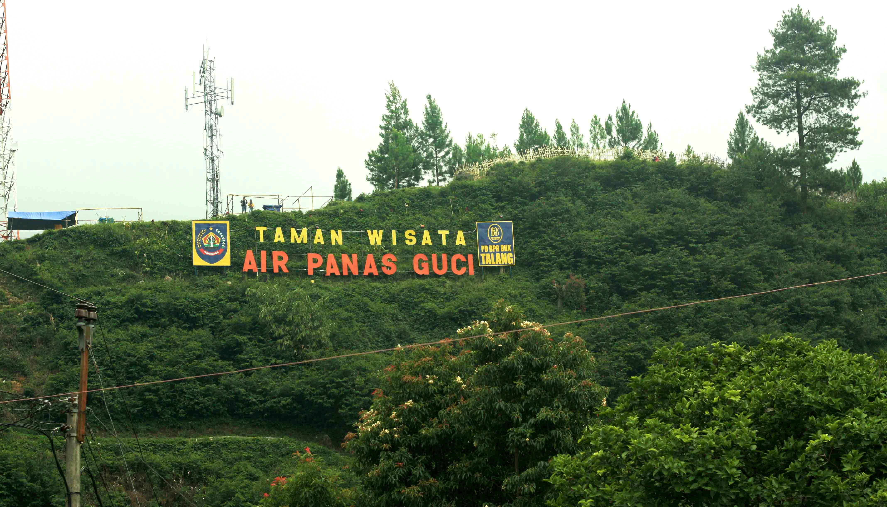

Sejarah
Kekayaan sejarah sebuah kota atau kawasan terlihat dari jejak peninggalan apa yang disebut
cultural heritage dan living cultural yang tersisa dan hidup di kawasan tersebut. Keduanya
merupakan warisan peradaban umat manusia.
Demikian halnya dengan Kabupaten Tegal, Wilayah yang kaya akan jejak peninggalan kesejarahan
sebagai penanda bahwa Kabupaten Tegal sebagai tlatah kawasan tak dapat dilepaskan dari
keterkaitan garis sejarah hingga membentuk kawasan sekarang ini.
Penekanan pada bidang pertanian misalnya, tak dapat dilepaskan dari kondisi wilayah dan akar
kesejarahan tlatah Kabupaten Tegal yang mengembangkan kapasitasnya selaku wilayah agraris.
Tradisi keagrarisan dimulai dari ketokoan Ki Gede Sebayu juru demung trah Pajang. Bahkan kalau
dirunut keagrarisan itu dimulai semenjak Mataram Kuno.
Kesaksian ini diperkuat denga ditemukannya artefak kuno dan candi di Pedagangan. Ditambah tlatah
Tegal kerapkali dikaitkan dengan kerajaan Pajang dan Mataram Islam yang cenderung kekuasaan
dengan basis pada agraris ( De Graaf, 1986).
Nama Tegal berasal dari nama Tetegal, tanah subur yang mampu menghasilkan tanaman pertanian.
Sumber lain menyatakan, nama Tegal dipercaya berasal dari kata Teteguall. Sebutan yang diberikan
seorang pedagang asal Portugis yaitu Tome Pires yang singgah di Pelabuhan Tegal pada tahun
1500–an.
Kabupaten Tegal berdiri pada tanggal 18 Mei 1601 pada saat Ki Gede Sebayu diangkat sebagai juru
demung di Tegal oleh Sultan Mataram, dan mulai membangun daerah ini.
Kuliner
Ada berbagai macam Kuliner yang ada di Kota Bahari ini salah satunya adalah.
Kupat Bongkok
Makanan khas dari kota Bahari yang satu ini adalah makanan yang berasal dari dusun Bongkok
kecamatan Kramat ini sangat menggali lidah, terkhusus dimakan pada saat pagi hari sambil
menikmati sunrice di pantai Larangan.
Nasi Lengko
Makanan yang satu ini tidak familiar lagi dikaum pelajar karena makanan inilah yang menjadi
primadona saat jamanya sekolah, dikantin sekolah pasti menyediakan makanan ini, selain
rasanya yang enak makanan ini tergolong sangat murah karena satu porsinya saja cuma merogoh
kocek Rp.3000 saja. orang perantau asal Tegal pasti kalau pulang ke kampungnya hal yang
pertama dicicipi adalah Nasi Lengko ini.
Sate Kambing Batibul
Makanan yang satu ini memang banyak ditemukan dikota lain, tapi sate Batibul khas Kota Bahari
ini dari segi lidah sangat berbeda dengan sate kambing pada biasanya. Selain dagingnya yang
empuk sate ini juga menggunakan daging kambing muda.
Soto Babat
Makanan kali ini memiliki cita rasa yang unik, ada rasa asam ke asaman dan sangat menggigit
lidah bagi penikmatnya.
Tahu Aci
adalah makanan ringan yang berasal dari daerah benjaran kecamatan Adiwena, Tahu Aci menjadi
Primadona bagi masyarakat Tegal dan Masyarakat kota lain, kalau belum mencicipi makanan satu
ini kalau ke Tegal rasanya kurang afdol aja.
Blendung
adalah jajanan turun temurun dari nenek moyang, Jajajan ini terbuat dari bahan dasar Jagung
yang direbus kemudin dikasih parutan kelapa dan rasanya yang sangat lezat ini adalah makanan
sejak zaman belanda yang sering disebutnya dulu Nasi Jagung.
Wisata
Objek Wisata Guci

Berada di Kecamatan Bumijawa, objek wisata ini menjadi tempat favorite warga Tegal, untuk
hari-hari libur sendiri sangat ramai dengan pengunjung apalagi libur hari raya, objek wisata
ini berada di kaki gunung slamet dan tempat favorite pengunjung yaitu pemandian air panas
baik di panjuran 7 mauapun pancuran 5.
Prabalintang

Wisata kali ini adalah wisata hutan pines yang berada di kecamatan Bojong khususnya di desa
Danasari, wisata ini cocok untuk anda yang suka foto dengan spot alam, tempat ini juga
sering dipakai untuk foto prewedding karena keindahan alamnya tempat ini banyak dikunjungi
oleh para traveller untuk mengeksplor tempat ini.
Bukit Baper

Tempat ini berada di kecamatan Bumijawa, tempat ini terkenal dengan pemandangan alamnya
dengan bukit diatas pemukimana warga menjadikan tempat ini memiliki keunikan tersendiri,
dengan spot yang sangat mengagumkan dengan pemandangan alam dan kabut asap dari kaki gununug
menjadikan tempat ini menjadi incaran para kaum millenial untuk mengisi waktu libur mereka,
merelaksasikan otak yang jenuh dengan pelajaran dan pekerjaan. asal mula bernama Baper
karena warga situ ada yang melihat sosok wanita yang sangat cantik sehingga warga tersebut
bawa perasaan/Baper.